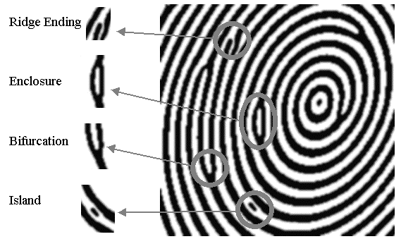

Fingerprint scanners are of three types: optical, capacitance and ultrasonic variants scanners. In all 3 types of scanners, a fingerprint is stored as a template which is used in the future to make comparisons. Comparisons are made primarily using 3 kinds of algorithms:
- Matching algorithms are used to compare the current fingerprint to stored fingerprint templates for authentication.
- Pattern based algorithms compare basic features of a given fingerprint, such as the arch, whorl and loop with a previously stored fingerprint template. To do so, the two templates are first aligned by finding the central point of both and are then graphically compared.
- Minutia feature extraction algorithms are primarily focused on using minutiae features on the fingers for comparisons. These features include ridge endings, bifurcations and short ridges.
